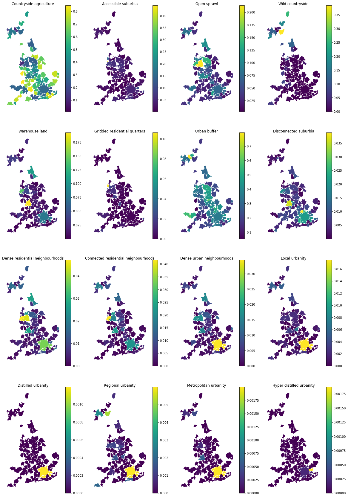
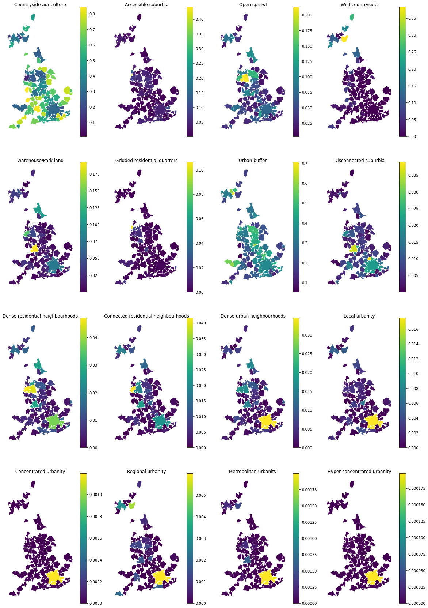
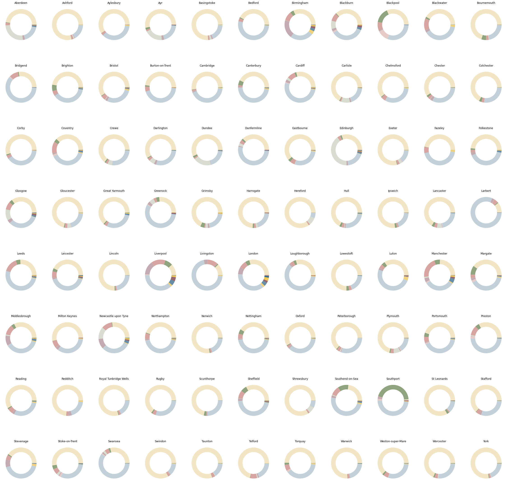
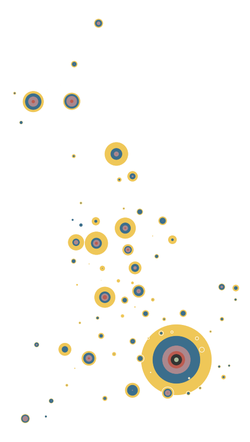
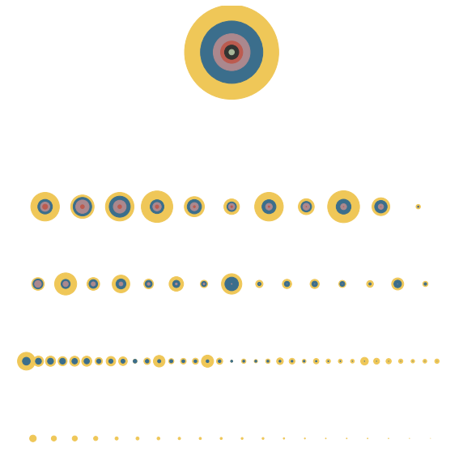

Composition of signatures within FUAs¶
import geopandas
import pandas
import tobler
from download import download
# tobler.__version__
https://ghsl.jrc.ec.europa.eu/ghs_fua.php
url = "https://jeodpp.jrc.ec.europa.eu/ftp/jrc-opendata/GHSL/GHS_FUA_UCDB2015_GLOBE_R2019A/V1-0/GHS_FUA_UCDB2015_GLOBE_R2019A_54009_1K_V1_0.zip"
download(url, "../../urbangrammar_samba/spatial_signatures/esda/fua", kind='zip')
Creating data folder...
Downloading data from https://jeodpp.jrc.ec.europa.eu/ftp/jrc-opendata/GHSL/GHS_FUA_UCDB2015_GLOBE_R2019A/V1-0/GHS_FUA_UCDB2015_GLOBE_R2019A_54009_1K_V1_0.zip (2.9 MB)
file_sizes: 100%|██████████████████████████| 3.06M/3.06M [00:00<00:00, 10.7MB/s]
Extracting zip file...
Successfully downloaded / unzipped to ../../urbangrammar_samba/spatial_signatures/esda/fua
'../../urbangrammar_samba/spatial_signatures/esda/fua'
fua = geopandas.read_file("../../urbangrammar_samba/spatial_signatures/esda/fua/GHS_FUA_UCDB2015_GLOBE_R2019A_54009_1K_V1_0.gpkg")
fua
| eFUA_ID | UC_num | UC_IDs | eFUA_name | Commuting | Cntry_ISO | Cntry_name | FUA_area | UC_area | FUA_p_2015 | UC_p_2015 | Com_p_2015 | geometry | |
|---|---|---|---|---|---|---|---|---|---|---|---|---|---|
| 0 | 547.0 | 1.0 | 1699 | Greenock | 1.0 | GBR | UnitedKingdom | 332.0 | 30.0 | 1.333568e+05 | 6.283737e+04 | 70519.447210 | POLYGON ((224739.710 691590.642, 225634.040 69... |
| 1 | 689.0 | 1.0 | 1703 | Ayr | 1.0 | GBR | UnitedKingdom | 822.0 | 24.0 | 2.335923e+05 | 5.258146e+04 | 181010.863144 | POLYGON ((231195.220 644361.282, 232093.134 64... |
| 2 | 825.0 | 1.0 | 1707 | Plymouth | 1.0 | GBR | UnitedKingdom | 1017.0 | 88.0 | 3.970969e+05 | 2.640459e+05 | 133050.937344 | POLYGON ((251771.869 78730.828, 253647.337 786... |
| 3 | 955.0 | 5.0 | 1709;1716;1721;1722;1723 | Glasgow | 1.0 | GBR | UnitedKingdom | 2350.0 | 426.0 | 1.743356e+06 | 1.284148e+06 | 459207.683647 | POLYGON ((253299.926 700606.879, 254193.611 70... |
| 4 | 1072.0 | 2.0 | 1713;1718 | Swansea | 1.0 | GBR | UnitedKingdom | 1134.0 | 116.0 | 5.272905e+05 | 2.223222e+05 | 304968.305415 | POLYGON ((262905.627 220030.129, 263833.914 22... |
| ... | ... | ... | ... | ... | ... | ... | ... | ... | ... | ... | ... | ... | ... |
| 87 | 5756.0 | 1.0 | 2004 | Folkestone | 1.0 | GBR | UnitedKingdom | 274.0 | 17.0 | 1.498020e+05 | 5.153411e+04 | 98267.903456 | POLYGON ((631183.586 149202.162, 634915.837 14... |
| 88 | 5770.0 | 1.0 | 2005 | Norwich | 1.0 | GBR | UnitedKingdom | 1764.0 | 55.0 | 4.472363e+05 | 1.810405e+05 | 266195.802390 | POLYGON ((623834.131 336993.362, 628435.031 33... |
| 89 | 5783.0 | 1.0 | 2012 | Margate | 1.0 | GBR | UnitedKingdom | 221.0 | 38.0 | 1.783540e+05 | 1.112820e+05 | 67071.996621 | POLYGON ((640033.517 163574.709, 638169.305 16... |
| 90 | 5796.0 | 1.0 | 2032 | Great Yarmouth | 1.0 | GBR | UnitedKingdom | 306.0 | 23.0 | 1.087858e+05 | 6.239133e+04 | 46394.473434 | POLYGON ((640059.848 321444.536, 640981.115 32... |
| 91 | 5809.0 | 1.0 | 2033 | Lowestoft | 1.0 | GBR | UnitedKingdom | 331.0 | 26.0 | 1.123071e+05 | 6.743374e+04 | 44873.375769 | POLYGON ((654794.452 297193.164, 655717.403 29... |
92 rows × 13 columns
fua = fua[fua.Cntry_name == "UnitedKingdom"]
fua
| eFUA_ID | UC_num | UC_IDs | eFUA_name | Commuting | Cntry_ISO | Cntry_name | FUA_area | UC_area | FUA_p_2015 | UC_p_2015 | Com_p_2015 | geometry | |
|---|---|---|---|---|---|---|---|---|---|---|---|---|---|
| 0 | 547.0 | 1.0 | 1699 | Greenock | 1.0 | GBR | UnitedKingdom | 332.0 | 30.0 | 1.333568e+05 | 6.283737e+04 | 70519.447210 | POLYGON ((224739.710 691590.642, 225634.040 69... |
| 1 | 689.0 | 1.0 | 1703 | Ayr | 1.0 | GBR | UnitedKingdom | 822.0 | 24.0 | 2.335923e+05 | 5.258146e+04 | 181010.863144 | POLYGON ((231195.220 644361.282, 232093.134 64... |
| 2 | 825.0 | 1.0 | 1707 | Plymouth | 1.0 | GBR | UnitedKingdom | 1017.0 | 88.0 | 3.970969e+05 | 2.640459e+05 | 133050.937344 | POLYGON ((251771.869 78730.828, 253647.337 786... |
| 3 | 955.0 | 5.0 | 1709;1716;1721;1722;1723 | Glasgow | 1.0 | GBR | UnitedKingdom | 2350.0 | 426.0 | 1.743356e+06 | 1.284148e+06 | 459207.683647 | POLYGON ((253299.926 700606.879, 254193.611 70... |
| 4 | 1072.0 | 2.0 | 1713;1718 | Swansea | 1.0 | GBR | UnitedKingdom | 1134.0 | 116.0 | 5.272905e+05 | 2.223222e+05 | 304968.305415 | POLYGON ((262905.627 220030.129, 263833.914 22... |
| ... | ... | ... | ... | ... | ... | ... | ... | ... | ... | ... | ... | ... | ... |
| 87 | 5756.0 | 1.0 | 2004 | Folkestone | 1.0 | GBR | UnitedKingdom | 274.0 | 17.0 | 1.498020e+05 | 5.153411e+04 | 98267.903456 | POLYGON ((631183.586 149202.162, 634915.837 14... |
| 88 | 5770.0 | 1.0 | 2005 | Norwich | 1.0 | GBR | UnitedKingdom | 1764.0 | 55.0 | 4.472363e+05 | 1.810405e+05 | 266195.802390 | POLYGON ((623834.131 336993.362, 628435.031 33... |
| 89 | 5783.0 | 1.0 | 2012 | Margate | 1.0 | GBR | UnitedKingdom | 221.0 | 38.0 | 1.783540e+05 | 1.112820e+05 | 67071.996621 | POLYGON ((640033.517 163574.709, 638169.305 16... |
| 90 | 5796.0 | 1.0 | 2032 | Great Yarmouth | 1.0 | GBR | UnitedKingdom | 306.0 | 23.0 | 1.087858e+05 | 6.239133e+04 | 46394.473434 | POLYGON ((640059.848 321444.536, 640981.115 32... |
| 91 | 5809.0 | 1.0 | 2033 | Lowestoft | 1.0 | GBR | UnitedKingdom | 331.0 | 26.0 | 1.123071e+05 | 6.743374e+04 | 44873.375769 | POLYGON ((654794.452 297193.164, 655717.403 29... |
92 rows × 13 columns
fua = fua[~fua.eFUA_name.isin(["Londonderry/Derry", "Belfast", "Bangor"])]
fua.plot()
<AxesSubplot:>
fua.to_parquet("../../urbangrammar_samba/spatial_signatures/esda/fua.pq")
/tmp/ipykernel_419013/3201103534.py:1: UserWarning: this is an initial implementation of Parquet/Feather file support and associated metadata. This is tracking version 0.1.0 of the metadata specification at https://github.com/geopandas/geo-arrow-spec
This metadata specification does not yet make stability promises. We do not yet recommend using this in a production setting unless you are able to rewrite your Parquet/Feather files.
To further ignore this warning, you can do:
import warnings; warnings.filterwarnings('ignore', message='.*initial implementation of Parquet.*')
fua.to_parquet("../../urbangrammar_samba/spatial_signatures/esda/fua.pq")
signatures = geopandas.read_parquet("../../urbangrammar_samba/spatial_signatures/signatures/signatures_combined_levels_simplified.pq")
types = {
"0_0": "Countryside agriculture",
"1_0": "Accessible suburbia",
"3_0": "Open sprawl",
"4_0": "Wild countryside",
"5_0": "Warehouse land",
"6_0": "Gridded residential quarters",
"7_0": "Urban buffer",
"8_0": "Disconnected suburbia",
"2_0": "Dense residential neighbourhoods",
"2_1": "Connected residential neighbourhoods",
"2_2": "Dense urban neighbourhoods",
"9_0": "Local urbanity",
"9_1": "Distilled urbanity",
"9_2": "Regional urbanity",
"9_4": "Metropolitan urbanity",
"9_5": "Hyper distilled urbanity",
}
signatures["signature_type"] = signatures["signature_type"].map(types)
signatures = signatures[["signature_type", "geometry"]].dropna()
fua = fua.to_crs(signatures.crs).explode(ignore_index=True)
%%time
interpolated = tobler.area_weighted.area_interpolate(signatures, fua, categorical_variables=["signature_type"], n_jobs=-1)
CPU times: user 3.38 s, sys: 896 ms, total: 4.27 s
Wall time: 21.2 s
interpolated.columns = [c[15:] for c in interpolated.columns]
interpolated["eFUA_name"] = fua.eFUA_name.values
interpolated
| Countryside agriculture | Accessible suburbia | Open sprawl | Wild countryside | Warehouse land | Gridded residential quarters | Urban buffer | Disconnected suburbia | Dense residential neighbourhoods | Connected residential neighbourhoods | Dense urban neighbourhoods | Local urbanity | Distilled urbanity | Regional urbanity | Metropolitan urbanity | Hyper distilled urbanity | eFUA_name | ||
|---|---|---|---|---|---|---|---|---|---|---|---|---|---|---|---|---|---|---|
| 0 | 0.168313 | 0.021076 | 0.018714 | 0.032402 | 0.020645 | 0.004401 | 0.358672 | 0.000034 | 0.002817 | 0.008248 | 0.002354 | 0.000266 | 0.0 | 0.000000 | 0.000004 | 0.0 | POLYGON ((224739.710 691590.642, 225634.040 69... | Greenock |
| 1 | 0.501468 | 0.022157 | 0.016522 | 0.176886 | 0.024273 | 0.000057 | 0.186826 | 0.000690 | 0.004353 | 0.005485 | 0.000936 | 0.000540 | 0.0 | 0.000000 | 0.000000 | 0.0 | POLYGON ((231195.220 644361.282, 232093.134 64... | Ayr |
| 2 | 0.673253 | 0.011872 | 0.032880 | 0.065193 | 0.007980 | 0.008806 | 0.137906 | 0.000600 | 0.000784 | 0.000672 | 0.002779 | 0.002333 | 0.0 | 0.002002 | 0.000000 | 0.0 | POLYGON ((251771.869 78730.828, 253647.337 786... | Plymouth |
| 3 | 0.349829 | 0.033616 | 0.083691 | 0.115769 | 0.036108 | 0.000532 | 0.325480 | 0.002431 | 0.016770 | 0.017744 | 0.007264 | 0.005362 | 0.0 | 0.002923 | 0.000257 | 0.0 | POLYGON ((253299.926 700606.879, 254193.611 70... | Glasgow |
| 4 | 0.277877 | 0.017430 | 0.041449 | 0.020823 | 0.015282 | 0.009396 | 0.565439 | 0.001013 | 0.002800 | 0.001339 | 0.001152 | 0.000912 | 0.0 | 0.000106 | 0.000000 | 0.0 | POLYGON ((262905.627 220030.129, 263833.914 22... | Swansea |
| ... | ... | ... | ... | ... | ... | ... | ... | ... | ... | ... | ... | ... | ... | ... | ... | ... | ... | ... |
| 87 | 0.432981 | 0.015378 | 0.024940 | 0.000000 | 0.027444 | 0.000097 | 0.368081 | 0.000555 | 0.016934 | 0.001695 | 0.006709 | 0.000798 | 0.0 | 0.000010 | 0.000000 | 0.0 | POLYGON ((631183.586 149202.162, 634915.837 14... | Folkestone |
| 88 | 0.776945 | 0.008639 | 0.015685 | 0.000119 | 0.003289 | 0.000048 | 0.184315 | 0.003373 | 0.002865 | 0.001331 | 0.001185 | 0.001061 | 0.0 | 0.000184 | 0.000000 | 0.0 | POLYGON ((623834.131 336993.362, 628435.031 33... | Norwich |
| 89 | 0.355654 | 0.084199 | 0.033663 | 0.000000 | 0.021183 | 0.021566 | 0.345452 | 0.011280 | 0.007543 | 0.005552 | 0.002346 | 0.000564 | 0.0 | 0.000000 | 0.000000 | 0.0 | POLYGON ((640033.517 163574.709, 638169.305 16... | Margate |
| 90 | 0.615047 | 0.011976 | 0.025487 | 0.000013 | 0.003990 | 0.000120 | 0.285841 | 0.000225 | 0.016333 | 0.000136 | 0.010791 | 0.002588 | 0.0 | 0.000000 | 0.000000 | 0.0 | POLYGON ((640059.848 321444.536, 640981.115 32... | Great Yarmouth |
| 91 | 0.722136 | 0.027917 | 0.028139 | 0.000004 | 0.000773 | 0.002688 | 0.174201 | 0.000311 | 0.005844 | 0.000291 | 0.002135 | 0.000530 | 0.0 | 0.000000 | 0.000000 | 0.0 | POLYGON ((654794.452 297193.164, 655717.403 29... | Lowestoft |
92 rows × 18 columns
interpolated.columns = ['Countryside agriculture', 'Accessible suburbia', 'Open sprawl',
'Wild countryside', 'Warehouse land', 'Gridded residential quarters',
'Urban buffer', 'Disconnected suburbia',
'Dense residential neighbourhoods',
'Connected residential neighbourhoods', 'Dense urban neighbourhoods',
'Local urbanity', 'Distilled urbanity', 'Regional urbanity',
'Metropolitan urbanity', 'Hyper distilled urbanity', 'geometry', 'eFUA_name',
]
# THIS IS WRONG. MEAN GIVES INCORRECT VALUE BUT TOBLER IS BROKEN FOR MULTIPOLYGONS
interpolated = geopandas.GeoDataFrame(interpolated, crs=27700).dissolve('eFUA_name', aggfunc='mean')
interpolated.to_parquet("../../urbangrammar_samba/spatial_signatures/esda/fua_interpolated.pq")
/tmp/ipykernel_419013/215554984.py:1: UserWarning: this is an initial implementation of Parquet/Feather file support and associated metadata. This is tracking version 0.1.0 of the metadata specification at https://github.com/geopandas/geo-arrow-spec
This metadata specification does not yet make stability promises. We do not yet recommend using this in a production setting unless you are able to rewrite your Parquet/Feather files.
To further ignore this warning, you can do:
import warnings; warnings.filterwarnings('ignore', message='.*initial implementation of Parquet.*')
interpolated.to_parquet("../../urbangrammar_samba/spatial_signatures/esda/fua_interpolated.pq")
interpolated = geopandas.read_parquet("../../urbangrammar_samba/spatial_signatures/esda/fua_interpolated.pq")
import matplotlib.pyplot as plt
import urbangrammar_graphics as ugg
plot_data = interpolated.T.drop(["geometry"])
plot_data
| eFUA_name | Aberdeen | Ashford | Aylesbury | Ayr | Basingstoke | Bedford | Birmingham | Blackburn | Blackpool | Blackwater | ... | Stoke-on-Trent | Swansea | Swindon | Taunton | Telford | Torquay | Warwick | Weston-super-Mare | Worcester | York |
|---|---|---|---|---|---|---|---|---|---|---|---|---|---|---|---|---|---|---|---|---|---|
| Countryside agriculture | 0.468477 | 0.792438 | 0.59436 | 0.501468 | 0.761136 | 0.420932 | 0.321044 | 0.368766 | 0.281667 | 0.41688 | ... | 0.525861 | 0.277877 | 0.833133 | 0.801086 | 0.711197 | 0.459776 | 0.758988 | 0.601651 | 0.682591 | 0.778846 |
| Accessible suburbia | 0.00522 | 0.00235 | 0.002455 | 0.022157 | 0.001093 | 0.010153 | 0.036182 | 0.007712 | 0.140768 | 0.017973 | ... | 0.04122 | 0.01743 | 0.001827 | 0.001379 | 0.003193 | 0.021057 | 0.001588 | 0.016805 | 0.014683 | 0.006016 |
| Open sprawl | 0.027675 | 0.020485 | 0.021155 | 0.016522 | 0.016944 | 0.031639 | 0.098189 | 0.083923 | 0.079557 | 0.123921 | ... | 0.05946 | 0.041449 | 0.023318 | 0.033191 | 0.07283 | 0.057665 | 0.020888 | 0.047726 | 0.032913 | 0.019338 |
| Wild countryside | 0.2571 | 0.010379 | 0.000123 | 0.176886 | 0.0201 | 0.000271 | 0.001096 | 0.085286 | 0.0 | 0.0 | ... | 0.024821 | 0.020823 | 0.001921 | 0.005899 | 0.00963 | 0.0 | 0.00115 | 0.001526 | 0.008708 | 0.005078 |
| Warehouse land | 0.022771 | 0.00624 | 0.006748 | 0.024273 | 0.014514 | 0.004346 | 0.192086 | 0.026957 | 0.008568 | 0.027476 | ... | 0.008652 | 0.015282 | 0.006343 | 0.000582 | 0.013964 | 0.001896 | 0.007358 | 0.001523 | 0.002392 | 0.002115 |
| Gridded residential quarters | 0.001013 | 0.000156 | 0.0 | 0.000057 | 0.0 | 0.000029 | 0.000096 | 0.017656 | 0.106125 | 0.0 | ... | 0.018814 | 0.009396 | 0.000418 | 0.0 | 0.0 | 0.01746 | 0.000081 | 0.00027 | 0.000009 | 0.0 |
| Urban buffer | 0.175328 | 0.16147 | 0.357481 | 0.186826 | 0.177885 | 0.518984 | 0.243663 | 0.351137 | 0.268043 | 0.387318 | ... | 0.303327 | 0.565439 | 0.121925 | 0.146105 | 0.184388 | 0.352002 | 0.197949 | 0.273466 | 0.248869 | 0.177203 |
| Disconnected suburbia | 0.000592 | 0.005389 | 0.013276 | 0.00069 | 0.00634 | 0.005282 | 0.03605 | 0.001384 | 0.000172 | 0.023926 | ... | 0.002936 | 0.001013 | 0.006562 | 0.004286 | 0.004788 | 0.012217 | 0.003104 | 0.007674 | 0.003711 | 0.00422 |
| Dense residential neighbourhoods | 0.013168 | 0.001027 | 0.001616 | 0.004353 | 0.001947 | 0.004564 | 0.027543 | 0.024933 | 0.004334 | 0.002409 | ... | 0.010294 | 0.0028 | 0.003296 | 0.003498 | 0.0 | 0.002042 | 0.006854 | 0.00574 | 0.004114 | 0.002867 |
| Connected residential neighbourhoods | 0.006675 | 0.000063 | 0.002087 | 0.005485 | 0.000014 | 0.001761 | 0.023219 | 0.022438 | 0.000877 | 0.000042 | ... | 0.001383 | 0.001339 | 0.000086 | 0.000058 | 0.0 | 0.000016 | 0.000392 | 0.000041 | 0.000085 | 0.000859 |
| Dense urban neighbourhoods | 0.004019 | 0.000003 | 0.0007 | 0.000936 | 0.000027 | 0.001921 | 0.015444 | 0.009011 | 0.0 | 0.000057 | ... | 0.003226 | 0.001152 | 0.001028 | 0.001144 | 0.0 | 0.000754 | 0.001649 | 0.000464 | 0.001473 | 0.002051 |
| Local urbanity | 0.002651 | 0.0 | 0.0 | 0.00054 | 0.0 | 0.000118 | 0.003214 | 0.00074 | 0.000733 | 0.0 | ... | 0.000007 | 0.000912 | 0.000003 | 0.000005 | 0.0 | 0.000429 | 0.0 | 0.0 | 0.000454 | 0.001406 |
| Distilled urbanity | 0.0 | 0.0 | 0.0 | 0.0 | 0.0 | 0.0 | 0.0 | 0.0 | 0.0 | 0.0 | ... | 0.0 | 0.0 | 0.0 | 0.0 | 0.0 | 0.0 | 0.0 | 0.0 | 0.0 | 0.0 |
| Regional urbanity | 0.00079 | 0.0 | 0.0 | 0.0 | 0.0 | 0.0 | 0.001571 | 0.0 | 0.0 | 0.0 | ... | 0.0 | 0.000106 | 0.0 | 0.0 | 0.0 | 0.0 | 0.0 | 0.0 | 0.0 | 0.0 |
| Metropolitan urbanity | 0.0 | 0.0 | 0.0 | 0.0 | 0.0 | 0.0 | 0.000602 | 0.0 | 0.0 | 0.0 | ... | 0.0 | 0.0 | 0.0 | 0.0 | 0.0 | 0.0 | 0.0 | 0.0 | 0.0 | 0.0 |
| Hyper distilled urbanity | 0.0 | 0.0 | 0.0 | 0.0 | 0.0 | 0.0 | 0.0 | 0.0 | 0.0 | 0.0 | ... | 0.0 | 0.0 | 0.0 | 0.0 | 0.0 | 0.0 | 0.0 | 0.0 | 0.0 | 0.0 |
16 rows × 88 columns
cmap = ugg.get_colormap(20, randomize=False)
cols = cmap.colors
symbology = {'0_0': cols[16],
'1_0': cols[15],
'3_0': cols[9],
'4_0': cols[12],
'5_0': cols[21],
'6_0': cols[8],
'7_0': cols[4],
'8_0': cols[18],
'2_0': cols[6],
'2_1': cols[23],
'2_2': cols[19],
'9_0': cols[7],
'9_1': cols[3],
'9_2': cols[22],
'9_4': cols[11],
'9_5': cols[14],
}
symbology = {types[k]:v for k, v in symbology.items()}
plot_data.T["Wild countryside"].sort_values(ascending=False).iloc[:50].plot.bar(figsize=(18, 7))
<AxesSubplot:xlabel='eFUA_name'>
for sig in plot_data.index:
ax = interpolated.plot(sig, figsize=(15, 15), legend=True)
ax.axis('off')
plt.savefig(f"../../urbangrammar_samba/spatial_signatures/esda/fua_maps/{sig}.png")
plt.close()
fig, axs = plt.subplots(4, 4, figsize=(20, 30))
axs = axs.flatten()
for i, sig in enumerate(plot_data.index):
interpolated.plot(sig, ax=axs[i], legend=True)
axs[i].axis("off")
axs[i].set_title(sig)

ax = plot_data.T.plot.bar(color=list(symbology.values()), stacked=True, figsize=(40, 10), legend=False)

ax = plot_data["Liverpool"].plot.pie(colors=list(symbology.values()), labels=None, normalize=True)
ax.add_artist(plt.Circle((0,0), .7, color="w"))
<matplotlib.patches.Circle at 0x7fbf035c3a30>
plot_data
| eFUA_name | Aberdeen | Ashford | Aylesbury | Ayr | Basingstoke | Bedford | Birmingham | Blackburn | Blackpool | Blackwater | ... | Stoke-on-Trent | Swansea | Swindon | Taunton | Telford | Torquay | Warwick | Weston-super-Mare | Worcester | York |
|---|---|---|---|---|---|---|---|---|---|---|---|---|---|---|---|---|---|---|---|---|---|
| Countryside agriculture | 0.468477 | 0.792438 | 0.59436 | 0.501468 | 0.761136 | 0.420932 | 0.321044 | 0.368766 | 0.281667 | 0.41688 | ... | 0.525861 | 0.277877 | 0.833133 | 0.801086 | 0.711197 | 0.459776 | 0.758988 | 0.601651 | 0.682591 | 0.778846 |
| Accessible suburbia | 0.00522 | 0.00235 | 0.002455 | 0.022157 | 0.001093 | 0.010153 | 0.036182 | 0.007712 | 0.140768 | 0.017973 | ... | 0.04122 | 0.01743 | 0.001827 | 0.001379 | 0.003193 | 0.021057 | 0.001588 | 0.016805 | 0.014683 | 0.006016 |
| Open sprawl | 0.027675 | 0.020485 | 0.021155 | 0.016522 | 0.016944 | 0.031639 | 0.098189 | 0.083923 | 0.079557 | 0.123921 | ... | 0.05946 | 0.041449 | 0.023318 | 0.033191 | 0.07283 | 0.057665 | 0.020888 | 0.047726 | 0.032913 | 0.019338 |
| Wild countryside | 0.2571 | 0.010379 | 0.000123 | 0.176886 | 0.0201 | 0.000271 | 0.001096 | 0.085286 | 0.0 | 0.0 | ... | 0.024821 | 0.020823 | 0.001921 | 0.005899 | 0.00963 | 0.0 | 0.00115 | 0.001526 | 0.008708 | 0.005078 |
| Warehouse land | 0.022771 | 0.00624 | 0.006748 | 0.024273 | 0.014514 | 0.004346 | 0.192086 | 0.026957 | 0.008568 | 0.027476 | ... | 0.008652 | 0.015282 | 0.006343 | 0.000582 | 0.013964 | 0.001896 | 0.007358 | 0.001523 | 0.002392 | 0.002115 |
| Gridded residential quarters | 0.001013 | 0.000156 | 0.0 | 0.000057 | 0.0 | 0.000029 | 0.000096 | 0.017656 | 0.106125 | 0.0 | ... | 0.018814 | 0.009396 | 0.000418 | 0.0 | 0.0 | 0.01746 | 0.000081 | 0.00027 | 0.000009 | 0.0 |
| Urban buffer | 0.175328 | 0.16147 | 0.357481 | 0.186826 | 0.177885 | 0.518984 | 0.243663 | 0.351137 | 0.268043 | 0.387318 | ... | 0.303327 | 0.565439 | 0.121925 | 0.146105 | 0.184388 | 0.352002 | 0.197949 | 0.273466 | 0.248869 | 0.177203 |
| Disconnected suburbia | 0.000592 | 0.005389 | 0.013276 | 0.00069 | 0.00634 | 0.005282 | 0.03605 | 0.001384 | 0.000172 | 0.023926 | ... | 0.002936 | 0.001013 | 0.006562 | 0.004286 | 0.004788 | 0.012217 | 0.003104 | 0.007674 | 0.003711 | 0.00422 |
| Dense residential neighbourhoods | 0.013168 | 0.001027 | 0.001616 | 0.004353 | 0.001947 | 0.004564 | 0.027543 | 0.024933 | 0.004334 | 0.002409 | ... | 0.010294 | 0.0028 | 0.003296 | 0.003498 | 0.0 | 0.002042 | 0.006854 | 0.00574 | 0.004114 | 0.002867 |
| Connected residential neighbourhoods | 0.006675 | 0.000063 | 0.002087 | 0.005485 | 0.000014 | 0.001761 | 0.023219 | 0.022438 | 0.000877 | 0.000042 | ... | 0.001383 | 0.001339 | 0.000086 | 0.000058 | 0.0 | 0.000016 | 0.000392 | 0.000041 | 0.000085 | 0.000859 |
| Dense urban neighbourhoods | 0.004019 | 0.000003 | 0.0007 | 0.000936 | 0.000027 | 0.001921 | 0.015444 | 0.009011 | 0.0 | 0.000057 | ... | 0.003226 | 0.001152 | 0.001028 | 0.001144 | 0.0 | 0.000754 | 0.001649 | 0.000464 | 0.001473 | 0.002051 |
| Local urbanity | 0.002651 | 0.0 | 0.0 | 0.00054 | 0.0 | 0.000118 | 0.003214 | 0.00074 | 0.000733 | 0.0 | ... | 0.000007 | 0.000912 | 0.000003 | 0.000005 | 0.0 | 0.000429 | 0.0 | 0.0 | 0.000454 | 0.001406 |
| Distilled urbanity | 0.0 | 0.0 | 0.0 | 0.0 | 0.0 | 0.0 | 0.0 | 0.0 | 0.0 | 0.0 | ... | 0.0 | 0.0 | 0.0 | 0.0 | 0.0 | 0.0 | 0.0 | 0.0 | 0.0 | 0.0 |
| Regional urbanity | 0.00079 | 0.0 | 0.0 | 0.0 | 0.0 | 0.0 | 0.001571 | 0.0 | 0.0 | 0.0 | ... | 0.0 | 0.000106 | 0.0 | 0.0 | 0.0 | 0.0 | 0.0 | 0.0 | 0.0 | 0.0 |
| Metropolitan urbanity | 0.0 | 0.0 | 0.0 | 0.0 | 0.0 | 0.0 | 0.000602 | 0.0 | 0.0 | 0.0 | ... | 0.0 | 0.0 | 0.0 | 0.0 | 0.0 | 0.0 | 0.0 | 0.0 | 0.0 | 0.0 |
| Hyper distilled urbanity | 0.0 | 0.0 | 0.0 | 0.0 | 0.0 | 0.0 | 0.0 | 0.0 | 0.0 | 0.0 | ... | 0.0 | 0.0 | 0.0 | 0.0 | 0.0 | 0.0 | 0.0 | 0.0 | 0.0 | 0.0 |
16 rows × 88 columns
fig, axs = plt.subplots(8, 11, figsize=(40, 40))
axs = axs.flatten()
for i, place in enumerate(plot_data.columns):
plot_data[place].plot.pie(colors=list(symbology.values()), labels=None, ax=axs[i], normalize=True)
axs[i].axis("off")
axs[i].add_artist(plt.Circle((0,0), .7, color="w"))
axs[i].set_title(place)

interpolated = geopandas.read_parquet("../../urbangrammar_samba/spatial_signatures/esda/fua_interpolated.pq")
plot_data = geopandas.GeoDataFrame(columns=["level", "order", "area", "urbanity", "geometry"], crs=interpolated.crs)
centres = ['Distilled urbanity', 'Metropolitan urbanity', 'Regional urbanity', 'Local urbanity', 'Dense urban neighbourhoods']
mapdata = interpolated.set_geometry(interpolated.centroid)
centres = ['Hyper distilled urbanity', 'Distilled urbanity', 'Metropolitan urbanity', 'Regional urbanity', 'Local urbanity', 'Dense urban neighbourhoods']
sizes = pandas.DataFrame()
for centre in centres:
sizes[centre] = interpolated[centre] * interpolated.area
centroids = interpolated.centroid
for level, c in enumerate(centres):
sub = interpolated[interpolated[c] > 0]
area = sub.area
sub["sorter"] = sub[c] * area
sub = sub.sort_values("sorter", ascending=False)
for i, ix in enumerate(sub.index):
plot_data.loc[ix] = [level, i, sub["sorter"].loc[ix], c, centroids.loc[ix]]
interpolated = interpolated.drop(sub.index)
/opt/conda/lib/python3.9/site-packages/geopandas/geodataframe.py:1351: SettingWithCopyWarning:
A value is trying to be set on a copy of a slice from a DataFrame.
Try using .loc[row_indexer,col_indexer] = value instead
See the caveats in the documentation: https://pandas.pydata.org/pandas-docs/stable/user_guide/indexing.html#returning-a-view-versus-a-copy
super().__setitem__(key, value)
/opt/conda/lib/python3.9/site-packages/geopandas/geodataframe.py:1351: SettingWithCopyWarning:
A value is trying to be set on a copy of a slice from a DataFrame.
Try using .loc[row_indexer,col_indexer] = value instead
See the caveats in the documentation: https://pandas.pydata.org/pandas-docs/stable/user_guide/indexing.html#returning-a-view-versus-a-copy
super().__setitem__(key, value)
/opt/conda/lib/python3.9/site-packages/geopandas/geodataframe.py:1351: SettingWithCopyWarning:
A value is trying to be set on a copy of a slice from a DataFrame.
Try using .loc[row_indexer,col_indexer] = value instead
See the caveats in the documentation: https://pandas.pydata.org/pandas-docs/stable/user_guide/indexing.html#returning-a-view-versus-a-copy
super().__setitem__(key, value)
/opt/conda/lib/python3.9/site-packages/geopandas/geodataframe.py:1351: SettingWithCopyWarning:
A value is trying to be set on a copy of a slice from a DataFrame.
Try using .loc[row_indexer,col_indexer] = value instead
See the caveats in the documentation: https://pandas.pydata.org/pandas-docs/stable/user_guide/indexing.html#returning-a-view-versus-a-copy
super().__setitem__(key, value)
/opt/conda/lib/python3.9/site-packages/geopandas/geodataframe.py:1351: SettingWithCopyWarning:
A value is trying to be set on a copy of a slice from a DataFrame.
Try using .loc[row_indexer,col_indexer] = value instead
See the caveats in the documentation: https://pandas.pydata.org/pandas-docs/stable/user_guide/indexing.html#returning-a-view-versus-a-copy
super().__setitem__(key, value)
plot_data
| level | order | area | urbanity | geometry | |
|---|---|---|---|---|---|
| London | 0 | 0 | 1.306116e+06 | Hyper distilled urbanity | POINT (532033.954 173151.451) |
| Southend-on-Sea | 0 | 1 | 9.874793e+05 | Hyper distilled urbanity | POINT (581205.870 191871.135) |
| Birmingham | 2 | 0 | 1.075148e+06 | Metropolitan urbanity | POINT (397140.351 291249.630) |
| Edinburgh | 2 | 1 | 6.384964e+05 | Metropolitan urbanity | POINT (334233.186 662489.720) |
| Glasgow | 2 | 2 | 6.059172e+05 | Metropolitan urbanity | POINT (261190.294 661875.008) |
| ... | ... | ... | ... | ... | ... |
| Dunfermline | 5 | 14 | 2.106713e+04 | Dense urban neighbourhoods | POINT (312500.311 692959.958) |
| Peterborough | 5 | 15 | 1.699622e+04 | Dense urban neighbourhoods | POINT (521163.596 300651.717) |
| Fazeley | 5 | 16 | 1.041251e+04 | Dense urban neighbourhoods | POINT (423761.509 305464.823) |
| Larbert | 5 | 17 | 2.083159e+03 | Dense urban neighbourhoods | POINT (287277.743 684585.274) |
| Ashford | 5 | 18 | 1.521635e+03 | Dense urban neighbourhoods | POINT (599356.322 137526.674) |
82 rows × 5 columns
sizes = sizes.cumsum(axis=1)
sizes
| Hyper distilled urbanity | Distilled urbanity | Metropolitan urbanity | Regional urbanity | Local urbanity | Dense urban neighbourhoods | |
|---|---|---|---|---|---|---|
| eFUA_name | ||||||
| Aberdeen | 0.0 | 0.0 | 0.0 | 770787.18750 | 3.357802e+06 | 7.279608e+06 |
| Ashford | 0.0 | 0.0 | 0.0 | 0.00000 | 0.000000e+00 | 1.521635e+03 |
| Aylesbury | 0.0 | 0.0 | 0.0 | 0.00000 | 0.000000e+00 | 3.482333e+05 |
| Ayr | 0.0 | 0.0 | 0.0 | 0.00000 | 4.446619e+05 | 1.215901e+06 |
| Basingstoke | 0.0 | 0.0 | 0.0 | 0.00000 | 0.000000e+00 | 2.195386e+04 |
| ... | ... | ... | ... | ... | ... | ... |
| Torquay | 0.0 | 0.0 | 0.0 | 0.00000 | 1.758806e+05 | 4.851975e+05 |
| Warwick | 0.0 | 0.0 | 0.0 | 0.00000 | 0.000000e+00 | 1.168080e+06 |
| Weston-super-Mare | 0.0 | 0.0 | 0.0 | 0.00000 | 0.000000e+00 | 2.132653e+05 |
| Worcester | 0.0 | 0.0 | 0.0 | 297.17868 | 2.893785e+05 | 1.228327e+06 |
| York | 0.0 | 0.0 | 0.0 | 0.00000 | 1.528852e+06 | 3.758643e+06 |
88 rows × 6 columns
fig, ax = plt.subplots(figsize=(16, 16))
scaler = 20000
for i, centre in enumerate(centres[::-1]):
if centre == 'Dense urban neighbourhoods':
mapdata.drop("London").plot(markersize=sizes[centre].drop("London") / scaler, ax=ax, zorder=i+10, color=symbology[centre], edgecolor="w")
mapdata.loc[["London"]].plot(markersize=sizes[centre].loc[["London"]] / scaler, ax=ax, zorder=i, color=symbology[centre], edgecolor="w")
else:
mapdata.drop("London").plot(markersize=sizes[centre].drop("London") / scaler, ax=ax, zorder=i+10, color=symbology[centre])
mapdata.loc[["London"]].plot(markersize=sizes[centre].loc[["London"]] / scaler, ax=ax, zorder=i, color=symbology[centre])
ax.set_axis_off()
plt.savefig("figs/fua_hierarchy_map.pdf")

fig, axs = plt.subplots(1, 6, figsize=(52, 25))
scaler = 20000
axs = axs.flatten()
for i, centre in enumerate(centres[::-1]):
mapdata.drop("London").plot(markersize=sizes[centre].drop("London") / scaler, ax=axs[i], zorder=i+10, color=symbology[centre], edgecolor="w")
mapdata.loc[["London"]].plot(markersize=sizes[centre].loc[["London"]] / scaler, ax=axs[i], zorder=i, color=symbology[centre], edgecolor="w")
axs[i].set_axis_off()
plt.savefig("figs/fua_hierarchy_map_layers.pdf")
plot_data
| level | order | area | urbanity | geometry | |
|---|---|---|---|---|---|
| London | 0 | 0 | 1.306116e+06 | Hyper distilled urbanity | POINT (532033.954 173151.451) |
| Southend-on-Sea | 0 | 1 | 9.874793e+05 | Hyper distilled urbanity | POINT (581205.870 191871.135) |
| Birmingham | 2 | 0 | 1.075148e+06 | Metropolitan urbanity | POINT (397140.351 291249.630) |
| Edinburgh | 2 | 1 | 6.384964e+05 | Metropolitan urbanity | POINT (334233.186 662489.720) |
| Glasgow | 2 | 2 | 6.059172e+05 | Metropolitan urbanity | POINT (261190.294 661875.008) |
| ... | ... | ... | ... | ... | ... |
| Dunfermline | 5 | 14 | 2.106713e+04 | Dense urban neighbourhoods | POINT (312500.311 692959.958) |
| Peterborough | 5 | 15 | 1.699622e+04 | Dense urban neighbourhoods | POINT (521163.596 300651.717) |
| Fazeley | 5 | 16 | 1.041251e+04 | Dense urban neighbourhoods | POINT (423761.509 305464.823) |
| Larbert | 5 | 17 | 2.083159e+03 | Dense urban neighbourhoods | POINT (287277.743 684585.274) |
| Ashford | 5 | 18 | 1.521635e+03 | Dense urban neighbourhoods | POINT (599356.322 137526.674) |
82 rows × 5 columns
mapdata[["level", "order"]] = plot_data[["level", "order"]]
mapdata.order.max()
34
mapdata.loc[mapdata.level == 1, "order"] = mapdata.loc[mapdata.level == 1, "order"] * 5
mapdata.loc[mapdata.level == 2, "order"] = mapdata.loc[mapdata.level == 2, "order"] * 2.5
mapdata.loc[mapdata.level == 4, "order"] = mapdata.loc[mapdata.level == 4, "order"] * 1.5
for l in mapdata.level.dropna().unique():
mapdata.loc[mapdata.level == l, "x"] = (mapdata.loc[mapdata.level == l, "order"] - mapdata.loc[mapdata.level == l, "order"].mean()) / mapdata.loc[mapdata.level == l, "order"].std()
mapdata.loc["London", 'x'] = 0
fig, ax = plt.subplots(figsize=(10, 10))
scaler = 30000
for i, centre in enumerate(centres[::-1]):
ax.scatter(mapdata.x * 10, 1 - mapdata.level * 10, s=sizes[centre] / scaler, zorder=i+10, color=symbology[centre])
ax.set_axis_off()
# ax.axis('equal')
ax.set_ylim(-50, 7)
plt.savefig("figs/fua_hierarchy_diagram.pdf")

fig, ax = plt.subplots(figsize=(10, 10))
scaler = 30000
for i, centre in enumerate(centres[::-1]):
ax.scatter(mapdata.loc[["London"]].x * 10, 1 - mapdata.loc[["London"]].level * 10, s=sizes.loc[["London"]][centre] / scaler, zorder=i+10, color=symbology[centre])
ax.set_axis_off()
# ax.axis('equal')
# ax.set_ylim(-42, 7)
plt.savefig("figs/fua_hierarchy_london.pdf")